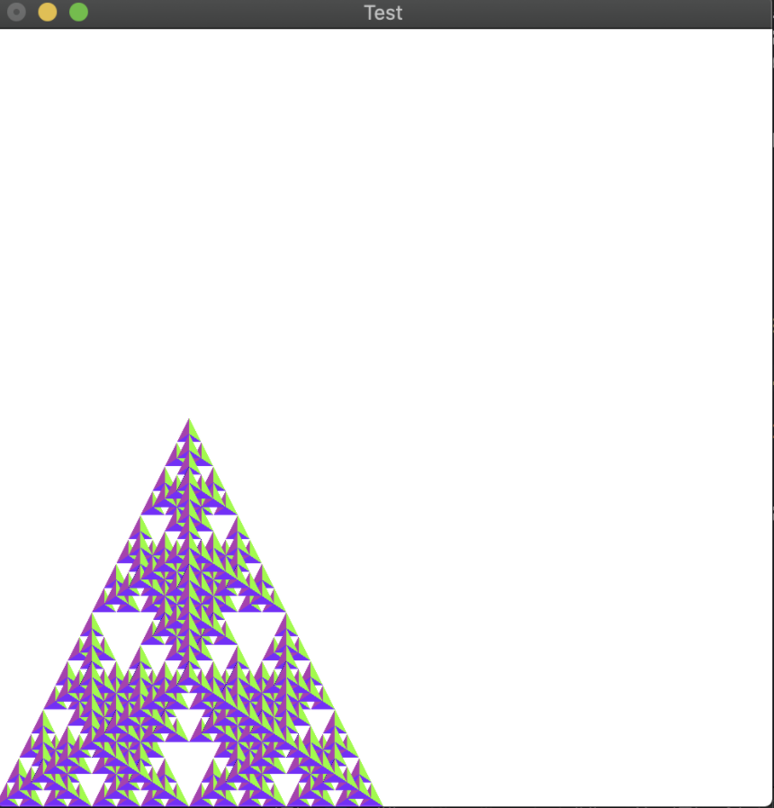

Our goal for the final project is to create a particle-based 3D fluid simulator. This project is heavily influenced by Macklin and Muller's paper "Position Based Fluids." The reason why we're adventuring into this space is because realistic fluid-rendering is space and time intensive. The paper offers an efficient way to model fluid interactions-- by abstracting their components to particles that interact according to the forces/ constraints denoted by the following: incompressability, tensile instability, viscosity, and vorticity.
In the current stage of the project, we have decided to switch gears from OpenGL to relying upon the structure used for the ClothSim project. The reason for this is due to our lack of prior experience with OpenGL's framework and quirks. After attempting to build our project from scratch using references like LearnOpenGL, we realized that the amount of time needed to understand and develop the project is not feasible. These past two weeks have been spent on attempting to familarize ourselves with the library and creating basic renderings in accordance to our code but, as of yet, we have not been able to work on the main focus of our project-- the particle-collision implementation. The results of this are displayed below.
|
|

|
Simply put, we're lagging from a timeline perspective. With two weeks left before the deadline, we've come to the realization that building this project from scratch won't work out for us, and have ultimately decided to work using the underlying structure of the ClothSim project. This means that we will be rewriting files in order to accurately depict interactions between water particles and other surfaces using the provided libraries (CGL, GLFW, and GLSL). We will also be able to allow users to interact with the simulation using NanoGUI system from the Project 4 framework. We're currently setting up the planes that will serve as a box-like structure that will contain the water particles as they fall from their initial state.
You can view our slides for the milestone here.
You can view our video for the milestone here.
As noted above, we've had to scrap our prior plans and start with a clean slate. This means that our timeline is going to be significantly altered in order to meet our submission goal. Thus, our timeline has been modified as such:
Thursday April 30th: Simulate water particles falling inside the created box according to rewritten mesh and without algorithm
Sunday May 2nd: Implement the algorithm from Macklin and Muller's paper
Tuesday May 5th: Experiment with fluids with different viscosities, compile clips for final deliverable
Thursday May 7th: Finalize materials for deliverable and execute!
Monday May 11th: Add additional components as denoted in the original project proposal and compile resources in preparation for submission
Though our team has encountered difficulty in getting setup with OpenGL, we think that we're on track to use the Project 4 framework as a springboard to accomplish our goals by the deadline. Thanks for your time!